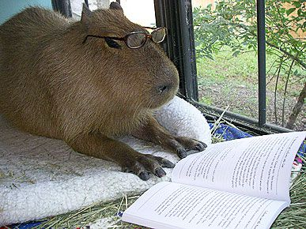

Writing your first paper#
Supporting materials#
Writing your first paper (or any paper for that matter) is never an easy feat. We have put together a Box folder with some resources that might help give you an idea of what to expect as you embark on this task. Here are brief explanations on the contexts of each folder and their files to speed up your navigation:
Cornell Thesis-Dissertation Template: Contains the Latex and Word templates for Cornell Masters’ Thesis or PhD Dissertation documents.
Journal Submission: Contains example documents required for submission to journals, as well as response to reviewers post-submission.
Writing Phases: Contains examples of paper sections in the typical order in which they are written.
Planning Gantt Chart: Contains an example of a Gantt chart that may be used to help order writing tasks.
We also have a supporting folder within the Reed Group Box folder called Dissertations containing current and former members’ PhD dissertations.
Some books on academic writing#
Strunk, W. J., & White, E. B. (1972). The elements of style. Allyn and Bacon. Borrow from Cornell Library here.
Zinsser, W. (2006). On writing well: The classic guide to writing nonfiction. HarperCollins. Borrow from Cornell Library here.
The publishing process#
Submitting for publication#
So you’re done writing your paper - amazing! Now it’s time to prepare to submit. Before you do, here are some tasks you should check off your list before you click the “Submit” button:
Double- and triple-check that your paper’s structure and contents meet the journal’s requirements.
Publish your GitHub repository on Zenodo. You will find a guide here. Be sure to include the Zenodo DOI in your paper in a location pre-specified by the journal.
Ensure that all your documents are prepared. The list below will vary by journal, but elements of it remain consistent throughout.
The full paper in PDF format
Its supporting information in PDF format
The accompanying GitHub repository
A zip file of all your figures numbered in their order of appearance in your submission. All figures should be submitted in PDF format
A zip file of the paper and its Latex formatting
A cover letter (you can find that here)
A list of authors and their contributions (you can find that here)
A list of reviewers that you think are most suited to review your work
Once this is done, you should be ready to submit. Each journal’s submission process is different, so read their requirements carefully and tailor your submission approach to each one!
The review process#
The review process can take anywhere from two weeks to months, so consistently check your submission on the journal’s submission page for updates. Once the review process is done, the editor will reach out to you with a final decision that may be one of the following:
Rejection (rare)
Return to author for minor revisions (sometimes)
Return to author for major revisions (most of the time)
Accept without revisions (almost never happens, sorry)
You should receive a document containing your reviewers’ comments, as well as a list of items that you should provide with the resubmission. Some common resubmission items include:
A “Response to Reviewers” document where you detail responses to each reviewer’s comment and help them locate where changes were made in your main text if additions or corrections were requested.
A “Tracked Changes” version of the manuscript (Overlead has in-built functionality for this, and the Latex TrackedChanges package is useful also here) where all changes (addition, modifications, deletions) post-submission in response to the reviewers are clearly shown.
A “Resubmission” (clean) version of the manuscript that only includes your changes.
Miscellaneous editor and reviewer-specific requests.
Journals we commonly submit papers to#
Water Resources Research (WRR): The flagship journal focused generally on the fields of water resources (as per the name) and hydrology. Now fully open access, it is published by the American Geophysical Union (AGU). You can find details on submitting to WRR here.
Earth’s Future (EF): Another open-access journal published by AGU, this journal publishes work that highlights the complex interactions between the natural environment and human activities. It covers topics that range from climate change, energy and resource management, to societal impacts and policymaking in science. You can find submission details to EF here.
Journal of Water Resources Planning and Management (JWRPM): This journal’s main focus is applied, systems-based Civil and Environmental Engineering that includesw water resources planning, management and governance. It is published by the American Society of Civil Engineers (ASCE). You can find submission details to JWRPM here.
Happy writing!
